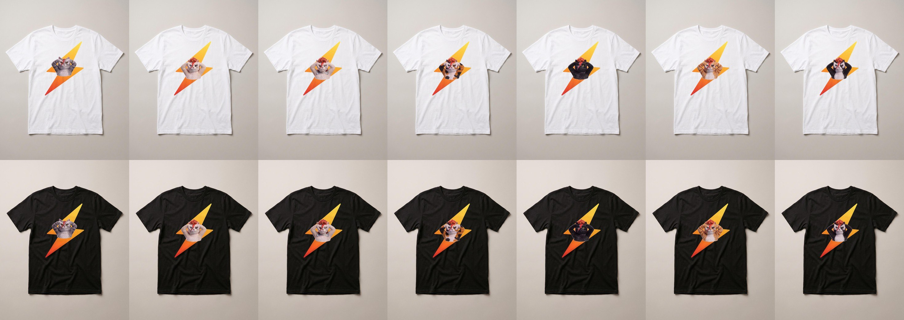
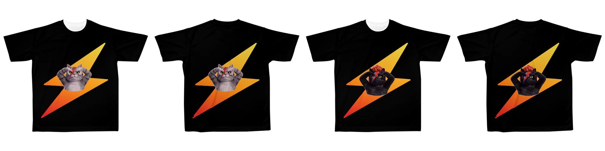
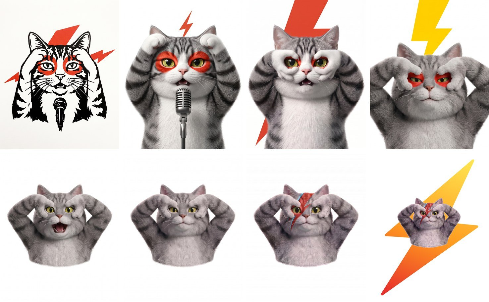

スタンダード T シャツの 7 点。うちの猫のごまくんと、赤い逆毛の猫が 6 毛色（白・襟つき・三毛・黒・茶トラ・ハチワレ）。後ろの稲妻は黄色から赤へのグラデーションです。
猫が 1973 年のあのポーズをしている T シャツです。両手の甲をこちらに向けて、指で輪っかを作って目に当てて、肘は高く。デザインは Claude Code と Gemini に手伝ってもらい、土曜日の夜から日曜日の朝にかけて作りました。SUZURI への登録も API で行い、スタンダード・全面プリント・黒い全面・全身の 4 種類 × 7 毛色の 28 点を並べています。受注生産なので在庫はなく、1 枚から買えます。

黒い全面プリント版。首元から裾まで稲妻が届き、背中にも同じ稲妻が入ります。SUZURI 側で生成された見本です。

できあがるまでの変遷。墨絵で手つきを確かめ、3D にして、手の向き・目・肘・稲妻の形を 30 回ほど直しました。
どう作ったか
- 猫の絵は Gemini の画像生成で描きました。3D のごまくんの設定画と、ポーズの参考画像を渡して、「ここだけ直して」を 30 回ほど繰り返しています
- 稲妻は Claude Code が SVG で描き、印刷用の大きさ（3307×3898 ピクセル）に猫と合成しました。言葉で 10 回伝えても合わなかった稲妻の形は、参考画像を 1 枚渡したら一発で合いました
- 全面プリント版は、SUZURI の公式テンプレート（袖まで含めた横長の型紙）の「切れない範囲」を自動で測って、その中に最大の大きさで置いています
- SUZURI への登録は API で行いました。図案と商品を一度に作り、SUZURI 側で生成された着用画像を白と黒で確かめてから公開しています
- 毛色違いは、1 匹できたあとに「同じ猫を三毛に」「黒猫に」と頼んで増やしました。立ち姿の全身版も同じやり方です
- 値段のうち私の取り分は 1 枚 700 円です。残りは SUZURI の材料費・印刷代・手数料になります
※ 名前やロゴは使わず、ポーズと雰囲気だけを自作の絵で再現しています。AI で作ったデザインをそのまま売るのではなく、「違う」と言い続けて自分の好みに寄せていく工程が、今回いちばん時間をかけたところです。
T シャツSUZURIGemini 画像生成Claude Code受注生産